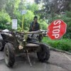
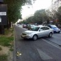
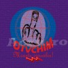
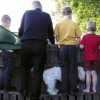
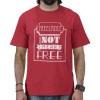
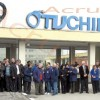
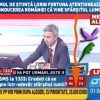

Zoltán Teszári, patronul DIGI 24 şi acţionarul majoritar al RCS & RDS e proprietarul televiziunii de ştiri creditat cu cea mai mare încredere (36%) de către cititorii ACRU.ro. Fostul mecanic ITB şi director al trustului Intact, Sorin Oancea, actualmente deţinătorul pachetului principal de acţiuni B1 TV a obţinut aproape 30% dintre voturi. Pe Oancea ar trebui [...]
Dan Diaconescu are o sabie tricoloră anti-ciocoi, pe care a primit-o într-unul dintre nenumăratele turnee electorale. Eroul nostru integru şi modest Pe lângă această redutabilă armă care-i va permite să meargă “pe urmele lui Tudor Vladimirescu”, cel mai iubit tătuc al poporului OTV mai are: Un cont personal în Euro la OTP Bank România, instituţie [...]
Contabil sau politician, preşedinte de bloc sau vedetă de televiziune, la un moment dat în viaţă, orice om se vede nevoit să ţină măcar o cuvântare în public. Asta n-ar fi o sarcină teribil de grea dacă oratorul de ocazie s-ar putea limita la a-şi expune ideile într-o manieră clară şi concisă. Necazul e că, [...]
Şeicul Omar Bakri Muhammad, un lider islamist, zice că România ar putea fi o ţintă pentru teroriştii serioşi, nu doar locul de joacă al sceleratului Butelie. Sirianul a făcut declaraţia inflamatoare explicând atentatul de la Burgas, Bulgaria, atac îndreptat asupra unui autocar cu turişti israelieni sosiţi pe litoralul bulgăresc. Dovedind o precară cunoaştere a realităţii [...]
Dacă vă întrebaţi cum parchează cel mai nesimţit şofer din România, trebuie să vedeţi isprava conducătorului auto din imaginile de mai jos. Nu ştim ce-a fumat bucureşteanul, dar a reuşit performanţa de a-şi priponi căruţa parca autoturismul cu numărul B-11-TGA într-o manieră demnă de bancurile cu nebuni. Omul a găsit o intersecţie aglomerată de pe [...]
Dan Diaconescu a comandat şapte saci (fără saşi, pentru că nemţii nu sunt cu poporul) pentru a transporta banii de salarii destinaţi angajaţilor Otvchim, cunoscută şi drept Oltchim Râmnicu Vâlcea. Înainte de a-i ridica, investitorul OTV a invitat cameramanii tuturor televiziunilor să surprindă momentul istoric al achiziţiei. După cinci minute chinuite, viitorul preşedinte al României a ieşit [...]
Bihor, Bucureşti, Cluj, Iaşi, Sibiu. E traseul concursului de stil masculin organizat de site-ul omonim, despre care v-am tot povestit de la începutul anului. Şi pentru că harta eleganţei pare aplecată spre vest, e rândul judeţului Timiş să-şi desemneze reprezentantul în finala naţională, recompensându-l cu articole vestimentare în valoare de 300 de lei. Domnii dornici să [...]
Cine te cunoaşte cel mai bine pe lumea asta? Cine ştie ce maşină ai, cum te îmbraci în fiecare zi, când ţi-ai schimbat televizorul sau când ţi-ai aruncat vechea maşină de spălat? Cine ştie la ce oră pleci la muncă, de câte ori pe săptămână mergi la cumpărături şi în ce zile duci gunoiul? Cine [...]
Începând de miercuri, 26 septembrie, cel mai citit blog din România e pe bani. La şapte ani după lansare, Vali Petcu îndrăzneşte să condiţioneze accesul cititorilor la anumite articole apărute pe zoso.ro de plata unui abonament lunar în valoare de 3 Euro. Vestea proastă şi adevărul cifrelor În spatele curajului de a introduce un sistem atipic [...]

Sistemul piramidal Caritas, cea mai cunoscută schemă Ponzi de pe meleagurile româneşti, a funcţionat din 1992 până în 14 august 1994, când prăbuşirea firească a devenit oficială. Ştiţi cine a fost ministru de finanţe în perioada ’92-’96, pe vremea guvernului condus de Nicolae Văcăroiu, actualul şef al Curţii de Conturi a României? Îl cheamă Florin [...]
Doamnelor şi domnilor, alungaţi-vă rudele, vecinii şi prietenii! Ca să puteţi citi în linişte, nu de alta. Am intrat în posesia convocatorului primei Adunări Generale a Acţionarilor Oltchim Râmnicu Vâlcea din era şoricelului petrochimic (cu) combinat, Dan Diaconescu. Vă prezentăm mai jos – în exclusivitate – acest document senzaţional. CONVOCATOR onsiliul de Administraţie al S.C. [...]
“Proprietatea Poporului Dreptate şi Adevăr anunţă prima victorie (în Cupa Ciocoi – n.n.). Dan Diaconescu a câştigat licitaţia, Oltchim rămâne poporului. Ciocoii au fost îngenunchiaţi! Viitorul aparţine poporului. România este pe mâini. Bune. Dan Diaconescu ne poate salva. De la vorbe, s-a trecut la fapte. Avuţia naţională redobândită, resursele naturale pentru români. Visul devine realitate.” [...]